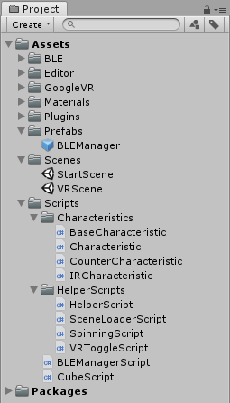
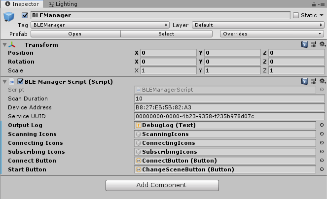
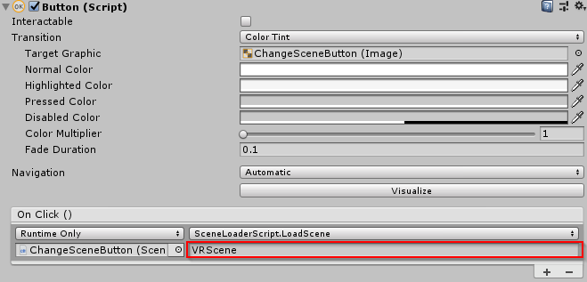
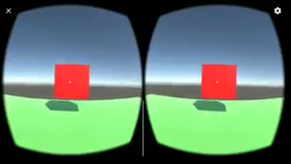

This page contains information about including the framework within your own Unity projects.
Requirements
| Component | Description |
|---|---|
| Compatible Smartphone | Smartphone which has support for Bluetooth Low Energy |
| BLE Unity Asset Plugin | As already mentioned, this is mandatory! We will not provide you with the needed files. Therefore, please support the author and purchase his asset on the Unity Asset Store (Link) |
| Google VR SDK | Follow the official documentation for setting up Unity for developing with the Google VR SDK (Link) |
Set Up
- Start a new Unity project (Unity Version 2018.3.12f1)
- Import the BikeVR-Framework package (Assets > Import Package > Custom Package... > Select BikeVR-Framework.unitypackage)
- Follow the official documentation for setting up Unity for developing with the Google VR SDK and import the Google VR SDK package
- Open up the Asset Store in the Unity Editor and import the BLE Unity asset from there (Click Account > My Assets > Import)
-
Your Project folder should look similar to this:

-
Open the StartScene (Scenes/StartScene) and make sure that every value of the BLE Manager Script is set correctly:

-
(Optional) Feel free to edit the StartScene or make any changes you deem necessary.
-
Use the VRScene or create a new one to create your own VR application (make sure to edit the ChangeSceneButton attribute in case you create a new scene)


Refer to the framework's documentation page for more information about how to properly use it.